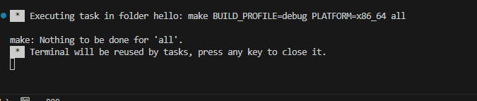
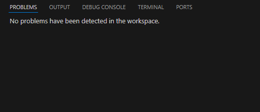

Before you can run or debug a program, you need to build it so that compiler and linker can create an executable binary. You can install the necessary compilation services by following the QNX Toolkit
Quickstart guide
.
To build the program:
QNX Toolkit builds the program, and displays the results in the terminal.


After the build operation finishes, your binaries are displayed in the program folder.